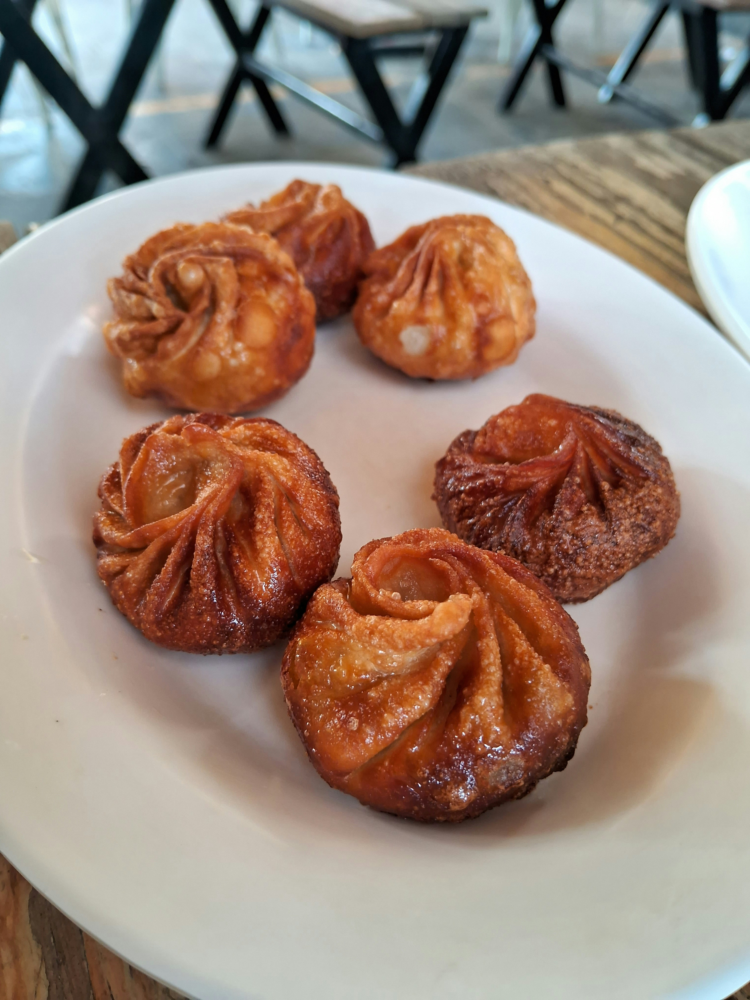

Fried Chicken Momo

Description
Fried chicken momo are dumplings filled with seasoned chicken,
onion, garlic, and herbs. They are steamed first and then fried
until the outside becomes crisp and golden.
Ingredients
- 20 momo wrappers
- 250 g ground chicken
- 1 small onion, finely chopped
- 2 cloves garlic, minced
- 1 teaspoon ginger, minced
- 1 tablespoon cooking oil
- 1 tablespoon soy sauce
- 1/2 teaspoon black pepper
- 1/2 teaspoon cumin powder
- Salt, to taste
- Oil for frying
Steps
- Combine the ground chicken, onion, garlic, ginger, soy sauce, spices, and salt in a bowl.
- Mix the filling thoroughly until all the ingredients are evenly combined.
- Place a small amount of filling in the center of each momo wrapper.
- Fold and seal each wrapper securely.
- Steam the momos until the chicken filling is fully cooked.
- Heat oil in a pan over medium heat.
- Fry the steamed momos until their outer surface becomes crisp and golden.
- Remove them from the pan and drain excess oil.
- Serve the fried momos with your preferred dipping sauce.
Home